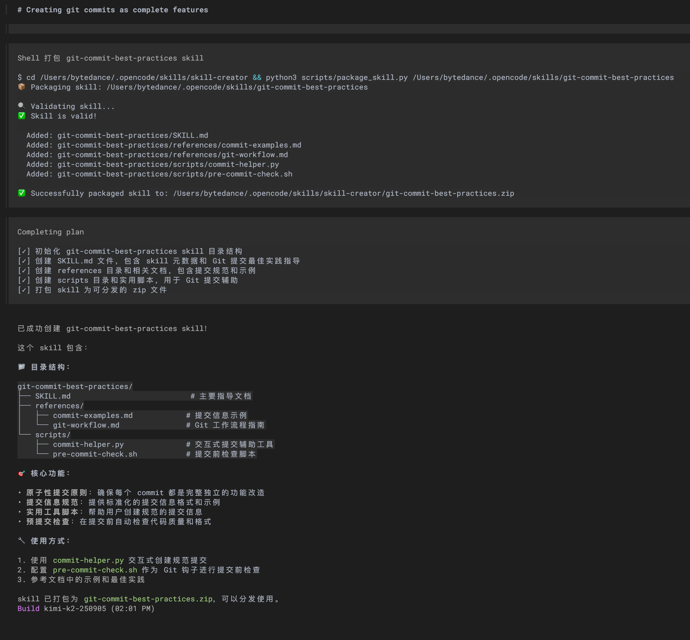

- tags:: opencode, Claude Code, MCP, K.Claude Skills
- source:: 解析 Claude Skills：比 MCP 更高效的 AI 应用增强方案！
- 补充阅读 我把自己的脚本变成了 Claude Skills，效率直接翻倍
- 逆向分析 Reverse Engineering Claude Code: How Skills different from Agents, Commands and Styles | by Vuong Ngo | Oct, 2025 | Level Up Coding
核心亮点
介绍新出的 Claude Skills 技术细节，并与 MCP 做对比。
Skills 使用类似于树状索引的结构，隐藏大量细节信息，默认只透出 Skills 的简略描述给 LLM。
当 LLM 需要时再通过工具调用获取 Skill 的具体信息（读取 SKILL.md ）
一个 Skill 中也可以提供更细节的信息甚至提供工具脚本，其他细节文档放在 references/ 目录下，脚本保存在 scripts/ 下。还有个 assets/ 目录，用于存放 LLM 生成产物需要的文件。
从能力上来说，Skills 和 MCP 一样，提供了提示词信息和工具调用的能力。
差异：
- 前者更轻量，无需预加载提示词和工具相关内容，只需在 LLM 判断需要时再动态主动获取。
- Skills 只是目录下的文本文件和简单脚本，发布分发 Skills 相比 MCP 简单直接。
文中介绍了作者编写 Skills 配置的经验，包含以下方面的内容：
- 角色定位及愿景
- OKR
- 知识与上下文：指引搜索和执行的方向
- 工具与能力边界：限制工具使用的范围及介绍 MCP 工具
- 规则与约束：行为护栏，保证安全性和合规性
补充阅读
将常用且固定操作步骤的工作流转换为 Skills ，省去重复提示相同的提示词。
逆向分析
Skill 作为一个工具被调用，工具描述中会包含所有 skills 的名称及描述：
{
"name": "Skill",
"description": "Execute a skill within the main conversation\n\n<skills_instructions>\nWhen users ask you to perform tasks, check if any of the available skills below can help complete the task more effectively. Skills provide specialized capabilities and domain knowledge.\n\nHow to use skills:\n- Invoke skills using this tool with the skill name only (no arguments)\n- When you invoke a skill, you will see <command-message>The \"{name}\" skill is loading</command-message>\n- The skill's prompt will expand and provide detailed instructions on how to complete the task\n- Examples:\n - `command: \"pdf\"` - invoke the pdf skill\n - `command: \"xlsx\"` - invoke the xlsx skill\n - `command: \"ms-office-suite:pdf\"` - invoke using fully qualified name\n\nImportant:\n- Only use skills listed in <available_skills> below\n- Do not invoke a skill that is already running\n- Do not use this tool for built-in CLI commands (like /help, /clear, etc.)\n</skills_instructions>\n\n<available_skills>\n<skill>\n<name>\nalgorithmic-art\n</name>\n<description>\nCreating algorithmic art using p5.js with seeded randomness and interactive parameter exploration. Use this when users request creating art using code, generative art, algorithmic art, flow fields, or particle systems. Create original algorithmic art rather than copying existing artists' work to avoid copyright violations. (user)\n</description>\n<location>\nproject\n</location>\n</skill>\n<skill>\n<name>\nartifacts-builder\n</name>\n<description>\nSuite of tools for creating elaborate, multi-component claude.ai HTML artifacts using modern frontend web technologies (React, Tailwind CSS, shadcn/ui). Use for complex artifacts requiring state management, routing, or shadcn/ui components - not for simple single-file HTML/JSX artifacts. (user)\n</description>\n<location>\nproject\n</location>\n</skill>\n<skill>\n<name>\nbrand-guidelines\n</name>\n<description>\nApplies Anthropic's official brand colors and typography to any sort of artifact that may benefit from having Anthropic's look-and-feel. Use it when brand colors or style guidelines, visual formatting, or company design standards apply. (user)\n</description>\n<location>\nproject\n</location>\n</skill>\n<skill>\n<name>\ncanvas-design\n</name>\n<description>\nCreate beautiful visual art in .png and .pdf documents using design philosophy. You should use this skill when the user asks to create a poster, piece of art, design, or other static piece. Create original visual designs, never copying existing artists' work to avoid copyright violations. (user)\n</description>\n<location>\nproject\n</location>\n</skill>\n<skill>\n<name>\ninternal-comms\n</name>\n<description>\nA set of resources to help me write all kinds of internal communications, using the formats that my company likes to use. Claude should use this skill whenever asked to write some sort of internal communications (status reports, leadership updates, 3P updates, company newsletters, FAQs, incident reports, project updates, etc.). (user)\n</description>\n<location>\nproject\n</location>\n</skill>\n<skill>\n<name>\nmcp-builder\n</name>\n<description>\nGuide for creating high-quality MCP (Model Context Protocol) servers that enable LLMs to interact with external services through well-designed tools. Use when building MCP servers to integrate external APIs or services, whether in Python (FastMCP) or Node/TypeScript (MCP SDK). (user)\n</description>\n<location>\nproject\n</location>\n</skill>\n<skill>\n<name>\nskill-creator\n</name>\n<description>\nGuide for creating effective skills. This skill should be used when users want to create a new skill (or update an existing skill) that extends Claude's capabilities with specialized knowledge, workflows, or tool integrations. (user)\n</description>\n<location>\nproject\n</location>\n</skill>\n<skill>\n<name>\nslack-gif-creator\n</name>\n<description>\nToolkit for creating animated GIFs optimized for Slack, with validators for size constraints and composable animation primitives. This skill applies when users request animated GIFs or emoji animations for Slack from descriptions like \"make me a GIF for Slack of X doing Y\". (user)\n</description>\n<location>\nproject\n</location>\n</skill>\n<skill>\n<name>\ntemplate-skill\n</name>\n<description>\nReplace with description of the skill and when Claude should use it. (user)\n</description>\n<location>\nproject\n</location>\n</skill>\n<skill>\n<name>\ntheme-factory\n</name>\n<description>\nToolkit for styling artifacts with a theme. These artifacts can be slides, docs, reportings, HTML landing pages, etc. There are 10 pre-set themes with colors/fonts that you can apply to any artifact that has been creating, or can generate a new theme on-the-fly. (user)\n</description>\n<location>\nproject\n</location>\n</skill>\n<skill>\n<name>\nwebapp-testing\n</name>\n<description>\nToolkit for interacting with and testing local web applications using Playwright. Supports verifying frontend functionality, debugging UI behavior, capturing browser screenshots, and viewing browser logs. (user)\n</description>\n<location>\nproject\n</location>\n</skill>\n</available_skills>\n",
"input_schema": {
"type": "object",
"properties": {
"command": {
"type": "string",
"description": "The skill name (no arguments). E.g., \"pdf\" or \"xlsx\""
}
},
"required": [
"command"
],
"additionalProperties": false,
"$schema": "http://json-schema.org/draft-07/schema#"
}
}工具描述：
Execute a skill within the main conversation
<skills_instructions>
When users ask you to perform tasks, check if any of the available skills below can help complete the task more effectively. Skills provide specialized capabilities and domain knowledge.
How to use skills:
- Invoke skills using this tool with the skill name only (no arguments)
- When you invoke a skill, you will see <command-message>The "{name}" skill is loading</command-message>
- The skill's prompt will expand and provide detailed instructions on how to complete the task
- Examples:
- `command: "pdf"` - invoke the pdf skill
- `command: "xlsx"` - invoke the xlsx skill
- `command: "ms-office-suite:pdf"` - invoke using fully qualified name
Important:
- Only use skills listed in <available_skills> below
- Do not invoke a skill that is already running
- Do not use this tool for built-in CLI commands (like /help, /clear, etc.)
</skills_instructions>
<available_skills>
<skill>
<name>
algorithmic-art
</name>
<description>
Creating algorithmic art using p5.js with seeded randomness and interactive parameter exploration. Use this when users request creating art using code, generative art, algorithmic art, flow fields, or particle systems. Create original algorithmic art rather than copying existing artists' work to avoid copyright violations. (user)
</description>
<location>
project
</location>
</skill>
<skill>
<name>
artifacts-builder
</name>
<description>
Suite of tools for creating elaborate, multi-component claude.ai HTML artifacts using modern frontend web technologies (React, Tailwind CSS, shadcn/ui). Use for complex artifacts requiring state management, routing, or shadcn/ui components - not for simple single-file HTML/JSX artifacts. (user)
</description>
<location>
project
</location>
</skill>
<skill>
<name>
brand-guidelines
</name>
<description>
Applies Anthropic's official brand colors and typography to any sort of artifact that may benefit from having Anthropic's look-and-feel. Use it when brand colors or style guidelines, visual formatting, or company design standards apply. (user)
</description>
<location>
project
</location>
</skill>
<skill>
<name>
canvas-design
</name>
<description>
Create beautiful visual art in .png and .pdf documents using design philosophy. You should use this skill when the user asks to create a poster, piece of art, design, or other static piece. Create original visual designs, never copying existing artists' work to avoid copyright violations. (user)
</description>
<location>
project
</location>
</skill>
<skill>
<name>
internal-comms
</name>
<description>
A set of resources to help me write all kinds of internal communications, using the formats that my company likes to use. Claude should use this skill whenever asked to write some sort of internal communications (status reports, leadership updates, 3P updates, company newsletters, FAQs, incident reports, project updates, etc.). (user)
</description>
<location>
project
</location>
</skill>
<skill>
<name>
mcp-builder
</name>
<description>
Guide for creating high-quality MCP (Model Context Protocol) servers that enable LLMs to interact with external services through well-designed tools. Use when building MCP servers to integrate external APIs or services, whether in Python (FastMCP) or Node/TypeScript (MCP SDK). (user)
</description>
<location>
project
</location>
</skill>
<skill>
<name>
skill-creator
</name>
<description>
Guide for creating effective skills. This skill should be used when users want to create a new skill (or update an existing skill) that extends Claude's capabilities with specialized knowledge, workflows, or tool integrations. (user)
</description>
<location>
project
</location>
</skill>
<skill>
<name>
slack-gif-creator
</name>
<description>
Toolkit for creating animated GIFs optimized for Slack, with validators for size constraints and composable animation primitives. This skill applies when users request animated GIFs or emoji animations for Slack from descriptions like "make me a GIF for Slack of X doing Y". (user)
</description>
<location>
project
</location>
</skill>
<skill>
<name>
template-skill
</name>
<description>
Replace with description of the skill and when Claude should use it. (user)
</description>
<location>
project
</location>
</skill>
<skill>
<name>
theme-factory
</name>
<description>
Toolkit for styling artifacts with a theme. These artifacts can be slides, docs, reportings, HTML landing pages, etc. There are 10 pre-set themes with colors/fonts that you can apply to any artifact that has been creating, or can generate a new theme on-the-fly. (user)
</description>
<location>
project
</location>
</skill>
<skill>
<name>
webapp-testing
</name>
<description>
Toolkit for interacting with and testing local web applications using Playwright. Supports verifying frontend functionality, debugging UI behavior, capturing browser screenshots, and viewing browser logs. (user)
</description>
<location>
project
</location>
</skill>
</available_skills>
工具调用消息内容：
{
"role": "assistant",
"content": [
{
"type": "text",
"text": "I'll help you create an animated birthday GIF optimized for Slack! Let me use the Slack GIF creator skill for this."
},
{
"type": "tool_use",
"id": "toolu_01PaKwjndyeh3UPPUZFLe2Zu",
"name": "Skill",
"input": {
"command": "slack-gif-creator"
},
"cache_control": {
"type": "ephemeral"
}
}
]
},
{
"role": "user",
"content": [
{
"type": "tool_result",
"tool_use_id": "toolu_01PaKwjndyeh3UPPUZFLe2Zu",
"content": "Launching skill: slack-gif-creator"
},
{
"type": "text",
"text": "<command-message>The \"slack-gif-creator\" skill is running</command-message>\n<command-name>slack-gif-creator</command-name>"
},
{
"type": "text",
"text": "Base directory for this skill: /Users/[REDACTED]/workspace/claude-instrument/.claude/skills/slack-gif-creator\n\n# Slack GIF Creator - Flexible Toolkit\n\nA toolkit for creating animated GIFs optimized for Slack. Provides validators for Slack's constraints, composable animation primitives, and optional helper utilities. **Apply these tools however needed to achieve the creative vision.**\n\n## Slack's Requirements\n\nSlack has specific requirements for GIFs based on their use:\n\n**Message GIFs:**\n- Max size: ~2MB\n- Optimal dimensions: 480x480\n- Typical FPS: 15-20\n- Color limit: 128-256\n- Duration: 2-5s\n\n**Emoji GIFs:**\n- Max size: 64KB (strict limit)\n- Optimal dimensions: 128x128\n- Typical FPS: 10-12\n- Color limit: 32-48\n- Duration: 1-2s\n\n**Emoji GIFs are challenging** - the 64KB limit is strict. Strategies that help:\n- Limit to 10-15 frames total\n- Use 32-48 colors maximum\n- Keep designs simple\n- Avoid gradients\n- Validate file size frequently\n\n## Toolkit Structure\n\nThis skill provides three types of tools:\n\n1. **Validators** - Check if a GIF meets Slack's requirements\n2. **Animation Primitives** - Composable building blocks for motion (shake, bounce, move, kaleidoscope)\n3. **Helper Utilities** - Optional functions for common needs (text, colors, effects)\n\n**Complete creative freedom is available in how these tools are applied.**\n\n## Core Validators\n\nTo ensure a GIF meets Slack's constraints, use these validators:\n\n```python\nfrom core.gif_builder import GIFBuilder\n\n# After creating your GIF, check if it meets requirements\nbuilder = GIFBuilder(width=128, height=128, fps=10)\n# ... add your frames however you want ...\n\n# Save and check size\ninfo = builder.save('emoji.gif', num_colors=48, optimize_for_emoji=True)\n\n# The save method automatically warns if file exceeds limits\n# info dict contains: size_kb, size_mb, frame_count, duration_seconds\n```\n\n**File size validator**:\n```python\nfrom core.validators import check_slack_size\n\n# Check if GIF meets size limits\npasses, info = check_slack_size('emoji.gif', is_emoji=True)\n# Returns: (True/False, dict with size details)\n```\n\n**Dimension validator**:\n```python\nfrom core.validators import validate_dimensions\n\n# Check dimensions\npasses, info = validate_dimensions(128, 128, is_emoji=True)\n# Returns: (True/False, dict with dimension details)\n```\n\n**Complete validation**:\n```python\nfrom core.validators import validate_gif, is_slack_ready\n\n# Run all validations\nall_pass, results = validate_gif('emoji.gif', is_emoji=True)\n\n# Or quick check\nif is_slack_ready('emoji.gif', is_emoji=True):\n print(\"Ready to upload!\")\n```\n\n## Animation Primitives\n\nThese are composable building blocks for motion. Apply these to any object in any combination:\n\n### Shake\n```python\nfrom templates.shake import create_shake_animation\n\n# Shake an emoji\nframes = create_shake_animation(\n object_type='emoji',\n object_data={'emoji': '😱', 'size': 80},\n num_frames=20,\n shake_intensity=15,\n direction='both' # or 'horizontal', 'vertical'\n)\n```\n\n### Bounce\n```python\nfrom templates.bounce import create_bounce_animation\n\n# Bounce a circle\nframes = create_bounce_animation(\n object_type='circle',\n object_data={'radius': 40, 'color': (255, 100, 100)},\n num_frames=30,\n bounce_height=150\n)\n```\n\n### Spin / Rotate\n```python\nfrom templates.spin import create_spin_animation, create_loading_spinner\n\n# Clockwise spin\nframes = create_spin_animation(\n object_type='emoji',\n object_data={'emoji': '🔄', 'size': 100},\n rotation_type='clockwise',\n full_rotations=2\n)\n\n# Wobble rotation\nframes = create_spin_animation(rotation_type='wobble', full_rotations=3)\n\n# Loading spinner\nframes = create_loading_spinner(spinner_type='dots')\n```\n\n### Pulse / Heartbeat\n```python\nfrom templates.pulse import create_pulse_animation, create_attention_pulse\n\n# Smooth pulse\nframes = create_pulse_animation(\n object_data={'emoji': '❤️', 'size': 100},\n pulse_type='smooth',\n scale_range=(0.8, 1.2)\n)\n\n# Heartbeat (double-pump)\nframes = create_pulse_animation(pulse_type='heartbeat')\n\n# Attention pulse for emoji GIFs\nframes = create_attention_pulse(emoji='⚠️', num_frames=20)\n```\n\n### Fade\n```python\nfrom templates.fade import create_fade_animation, create_crossfade\n\n# Fade in\nframes = create_fade_animation(fade_type='in')\n\n# Fade out\nframes = create_fade_animation(fade_type='out')\n\n# Crossfade between two emojis\nframes = create_crossfade(\n object1_data={'emoji': '😊', 'size': 100},\n object2_data={'emoji': '😂', 'size': 100}\n)\n```\n\n### Zoom\n```python\nfrom templates.zoom import create_zoom_animation, create_explosion_zoom\n\n# Zoom in dramatically\nframes = create_zoom_animation(\n zoom_type='in',\n scale_range=(0.1, 2.0),\n add_motion_blur=True\n)\n\n# Zoom out\nframes = create_zoom_animation(zoom_type='out')\n\n# Explosion zoom\nframes = create_explosion_zoom(emoji='💥')\n```\n\n### Explode / Shatter\n```python\nfrom templates.explode import create_explode_animation, create_particle_burst\n\n# Burst explosion\nframes = create_explode_animation(\n explode_type='burst',\n num_pieces=25\n)\n\n# Shatter effect\nframes = create_explode_animation(explode_type='shatter')\n\n# Dissolve into particles\nframes = create_explode_animation(explode_type='dissolve')\n\n# Particle burst\nframes = create_particle_burst(particle_count=30)\n```\n\n### Wiggle / Jiggle\n```python\nfrom templates.wiggle import create_wiggle_animation, create_excited_wiggle\n\n# Jello wobble\nframes = create_wiggle_animation(\n wiggle_type='jello',\n intensity=1.0,\n cycles=2\n)\n\n# Wave motion\nframes = create_wiggle_animation(wiggle_type='wave')\n\n# Excited wiggle for emoji GIFs\nframes = create_excited_wiggle(emoji='🎉')\n```\n\n### Slide\n```python\nfrom templates.slide import create_slide_animation, create_multi_slide\n\n# Slide in from left with overshoot\nframes = create_slide_animation(\n direction='left',\n slide_type='in',\n overshoot=True\n)\n\n# Slide across\nframes = create_slide_animation(direction='left', slide_type='across')\n\n# Multiple objects sliding in sequence\nobjects = [\n {'data': {'emoji': '🎯', 'size': 60}, 'direction': 'left', 'final_pos': (120, 240)},\n {'data': {'emoji': '🎪', 'size': 60}, 'direction': 'right', 'final_pos': (240, 240)}\n]\nframes = create_multi_slide(objects, stagger_delay=5)\n```\n\n### Flip\n```python\nfrom templates.flip import create_flip_animation, create_quick_flip\n\n# Horizontal flip between two emojis\nframes = create_flip_animation(\n object1_data={'emoji': '😊', 'size': 120},\n object2_data={'emoji': '😂', 'size': 120},\n flip_axis='horizontal'\n)\n\n# Vertical flip\nframes = create_flip_animation(flip_axis='vertical')\n\n# Quick flip for emoji GIFs\nframes = create_quick_flip('👍', '👎')\n```\n\n### Morph / Transform\n```python\nfrom templates.morph import create_morph_animation, create_reaction_morph\n\n# Crossfade morph\nframes = create_morph_animation(\n object1_data={'emoji': '😊', 'size': 100},\n object2_data={'emoji': '😂', 'size': 100},\n morph_type='crossfade'\n)\n\n# Scale morph (shrink while other grows)\nframes = create_morph_animation(morph_type='scale')\n\n# Spin morph (3D flip-like)\nframes = create_morph_animation(morph_type='spin_morph')\n```\n\n### Move Effect\n```python\nfrom templates.move import create_move_animation\n\n# Linear movement\nframes = create_move_animation(\n object_type='emoji',\n object_data={'emoji': '🚀', 'size': 60},\n start_pos=(50, 240),\n end_pos=(430, 240),\n motion_type='linear',\n easing='ease_out'\n)\n\n# Arc movement (parabolic trajectory)\nframes = create_move_animation(\n object_type='emoji',\n object_data={'emoji': '⚽', 'size': 60},\n start_pos=(50, 350),\n end_pos=(430, 350),\n motion_type='arc',\n motion_params={'arc_height': 150}\n)\n\n# Circular movement\nframes = create_move_animation(\n object_type='emoji',\n object_data={'emoji': '🌍', 'size': 50},\n motion_type='circle',\n motion_params={\n 'center': (240, 240),\n 'radius': 120,\n 'angle_range': 360 # full circle\n }\n)\n\n# Wave movement\nframes = create_move_animation(\n motion_type='wave',\n motion_params={\n 'wave_amplitude': 50,\n 'wave_frequency': 2\n }\n)\n\n# Or use low-level easing functions\nfrom core.easing import interpolate, calculate_arc_motion\n\nfor i in range(num_frames):\n t = i / (num_frames - 1)\n x = interpolate(start_x, end_x, t, easing='ease_out')\n # Or: x, y = calculate_arc_motion(start, end, height, t)\n```\n\n### Kaleidoscope Effect\n```python\nfrom templates.kaleidoscope import apply_kaleidoscope, create_kaleidoscope_animation\n\n# Apply to a single frame\nkaleido_frame = apply_kaleidoscope(frame, segments=8)\n\n# Or create animated kaleidoscope\nframes = create_kaleidoscope_animation(\n base_frame=my_frame, # or None for demo pattern\n num_frames=30,\n segments=8,\n rotation_speed=1.0\n)\n\n# Simple mirror effects (faster)\nfrom templates.kaleidoscope import apply_simple_mirror\n\nmirrored = apply_simple_mirror(frame, mode='quad') # 4-way mirror\n# modes: 'horizontal', 'vertical', 'quad', 'radial'\n```\n\n**To compose primitives freely, follow these patterns:**\n```python\n# Example: Bounce + shake for impact\nfor i in range(num_frames):\n frame = create_blank_frame(480, 480, bg_color)\n\n # Bounce motion\n t_bounce = i / (num_frames - 1)\n y = interpolate(start_y, ground_y, t_bounce, 'bounce_out')\n\n # Add shake on impact (when y reaches ground)\n if y >= ground_y - 5:\n shake_x = math.sin(i * 2) * 10\n x = center_x + shake_x\n else:\n x = center_x\n\n draw_emoji(frame, '⚽', (x, y), size=60)\n builder.add_frame(frame)\n```\n\n## Helper Utilities\n\nThese are optional helpers for common needs. **Use, modify, or replace these with custom implementations as needed.**\n\n### GIF Builder (Assembly & Optimization)\n\n```python\nfrom core.gif_builder import GIFBuilder\n\n# Create builder with your chosen settings\nbuilder = GIFBuilder(width=480, height=480, fps=20)\n\n# Add frames (however you created them)\nfor frame in my_frames:\n builder.add_frame(frame)\n\n# Save with optimization\nbuilder.save('output.gif',\n num_colors=128,\n optimize_for_emoji=False)\n```\n\nKey features:\n- Automatic color quantization\n- Duplicate frame removal\n- Size warnings for Slack limits\n- Emoji mode (aggressive optimization)\n\n### Text Rendering\n\nFor small GIFs like emojis, text readability is challenging. A common solution involves adding outlines:\n\n```python\nfrom core.typography import draw_text_with_outline, TYPOGRAPHY_SCALE\n\n# Text with outline (helps readability)\ndraw_text_with_outline(\n frame, \"BONK!\",\n position=(240, 100),\n font_size=TYPOGRAPHY_SCALE['h1'], # 60px\n text_color=(255, 68, 68),\n outline_color=(0, 0, 0),\n outline_width=4,\n centered=True\n)\n```\n\nTo implement custom text rendering, use PIL's `ImageDraw.text()` which works fine for larger GIFs.\n\n### Color Management\n\nProfessional-looking GIFs often use cohesive color palettes:\n\n```python\nfrom core.color_palettes import get_palette\n\n# Get a pre-made palette\npalette = get_palette('vibrant') # or 'pastel', 'dark', 'neon', 'professional'\n\nbg_color = palette['background']\ntext_color = palette['primary']\naccent_color = palette['accent']\n```\n\nTo work with colors directly, use RGB tuples - whatever works for the use case.\n\n### Visual Effects\n\nOptional effects for impact moments:\n\n```python\nfrom core.visual_effects import ParticleSystem, create_impact_flash, create_shockwave_rings\n\n# Particle system\nparticles = ParticleSystem()\nparticles.emit_sparkles(x=240, y=200, count=15)\nparticles.emit_confetti(x=240, y=200, count=20)\n\n# Update and render each frame\nparticles.update()\nparticles.render(frame)\n\n# Flash effect\nframe = create_impact_flash(frame, position=(240, 200), radius=100)\n\n# Shockwave rings\nframe = create_shockwave_rings(frame, position=(240, 200), radii=[30, 60, 90])\n```\n\n### Easing Functions\n\nSmooth motion uses easing instead of linear interpolation:\n\n```python\nfrom core.easing import interpolate\n\n# Object falling (accelerates)\ny = interpolate(start=0, end=400, t=progress, easing='ease_in')\n\n# Object landing (decelerates)\ny = interpolate(start=0, end=400, t=progress, easing='ease_out')\n\n# Bouncing\ny = interpolate(start=0, end=400, t=progress, easing='bounce_out')\n\n# Overshoot (elastic)\nscale = interpolate(start=0.5, end=1.0, t=progress, easing='elastic_out')\n```\n\nAvailable easings: `linear`, `ease_in`, `ease_out`, `ease_in_out`, `bounce_out`, `elastic_out`, `back_out` (overshoot), and more in `core/easing.py`.\n\n### Frame Composition\n\nBasic drawing utilities if you need them:\n\n```python\nfrom core.frame_composer import (\n create_gradient_background, # Gradient backgrounds\n draw_emoji_enhanced, # Emoji with optional shadow\n draw_circle_with_shadow, # Shapes with depth\n draw_star # 5-pointed stars\n)\n\n# Gradient background\nframe = create_gradient_background(480, 480, top_color, bottom_color)\n\n# Emoji with shadow\ndraw_emoji_enhanced(frame, '🎉', position=(200, 200), size=80, shadow=True)\n```\n\n## Optimization Strategies\n\nWhen your GIF is too large:\n\n**For Message GIFs (>2MB):**\n1. Reduce frames (lower FPS or shorter duration)\n2. Reduce colors (128 → 64 colors)\n3. Reduce dimensions (480x480 → 320x320)\n4. Enable duplicate frame removal\n\n**For Emoji GIFs (>64KB) - be aggressive:**\n1. Limit to 10-12 frames total\n2. Use 32-40 colors maximum\n3. Avoid gradients (solid colors compress better)\n4. Simplify design (fewer elements)\n5. Use `optimize_for_emoji=True` in save method\n\n## Example Composition Patterns\n\n### Simple Reaction (Pulsing)\n```python\nbuilder = GIFBuilder(128, 128, 10)\n\nfor i in range(12):\n frame = Image.new('RGB', (128, 128), (240, 248, 255))\n\n # Pulsing scale\n scale = 1.0 + math.sin(i * 0.5) * 0.15\n size = int(60 * scale)\n\n draw_emoji_enhanced(frame, '😱', position=(64-size//2, 64-size//2),\n size=size, shadow=False)\n builder.add_frame(frame)\n\nbuilder.save('reaction.gif', num_colors=40, optimize_for_emoji=True)\n\n# Validate\nfrom core.validators import check_slack_size\ncheck_slack_size('reaction.gif', is_emoji=True)\n```\n\n### Action with Impact (Bounce + Flash)\n```python\nbuilder = GIFBuilder(480, 480, 20)\n\n# Phase 1: Object falls\nfor i in range(15):\n frame = create_gradient_background(480, 480, (240, 248, 255), (200, 230, 255))\n t = i / 14\n y = interpolate(0, 350, t, 'ease_in')\n draw_emoji_enhanced(frame, '⚽', position=(220, int(y)), size=80)\n builder.add_frame(frame)\n\n# Phase 2: Impact + flash\nfor i in range(8):\n frame = create_gradient_background(480, 480, (240, 248, 255), (200, 230, 255))\n\n # Flash on first frames\n if i < 3:\n frame = create_impact_flash(frame, (240, 350), radius=120, intensity=0.6)\n\n draw_emoji_enhanced(frame, '⚽', position=(220, 350), size=80)\n\n # Text appears\n if i > 2:\n draw_text_with_outline(frame, \"GOAL!\", position=(240, 150),\n font_size=60, text_color=(255, 68, 68),\n outline_color=(0, 0, 0), outline_width=4, centered=True)\n\n builder.add_frame(frame)\n\nbuilder.save('goal.gif', num_colors=128)\n```\n\n### Combining Primitives (Move + Shake)\n```python\nfrom templates.shake import create_shake_animation\n\n# Create shake animation\nshake_frames = create_shake_animation(\n object_type='emoji',\n object_data={'emoji': '😰', 'size': 70},\n num_frames=20,\n shake_intensity=12\n)\n\n# Create moving element that triggers the shake\nbuilder = GIFBuilder(480, 480, 20)\nfor i in range(40):\n t = i / 39\n\n if i < 20:\n # Before trigger - use blank frame with moving object\n frame = create_blank_frame(480, 480, (255, 255, 255))\n x = interpolate(50, 300, t * 2, 'linear')\n draw_emoji_enhanced(frame, '🚗', position=(int(x), 300), size=60)\n draw_emoji_enhanced(frame, '😰', position=(350, 200), size=70)\n else:\n # After trigger - use shake frame\n frame = shake_frames[i - 20]\n # Add the car in final position\n draw_emoji_enhanced(frame, '🚗', position=(300, 300), size=60)\n\n builder.add_frame(frame)\n\nbuilder.save('scare.gif')\n```\n\n## Philosophy\n\nThis toolkit provides building blocks, not rigid recipes. To work with a GIF request:\n\n1. **Understand the creative vision** - What should happen? What's the mood?\n2. **Design the animation** - Break it into phases (anticipation, action, reaction)\n3. **Apply primitives as needed** - Shake, bounce, move, effects - mix freely\n4. **Validate constraints** - Check file size, especially for emoji GIFs\n5. **Iterate if needed** - Reduce frames/colors if over size limits\n\n**The goal is creative freedom within Slack's technical constraints.**\n\n## Dependencies\n\nTo use this toolkit, install these dependencies only if they aren't already present:\n\n```bash\npip install pillow imageio numpy\n```\n",
"cache_control": {
"type": "ephemeral"
}
}
]
}包含 Skill 详情的内容：
Base directory for this skill: /Users/[REDACTED]/workspace/claude-instrument/.claude/skills/slack-gif-creator
# Slack GIF Creator - Flexible Toolkit
A toolkit for creating animated GIFs optimized for Slack. Provides validators for Slack's constraints, composable animation primitives, and optional helper utilities. **Apply these tools however needed to achieve the creative vision.**
## Slack's Requirements
Slack has specific requirements for GIFs based on their use:
**Message GIFs:**
- Max size: ~2MB
- Optimal dimensions: 480x480
- Typical FPS: 15-20
- Color limit: 128-256
- Duration: 2-5s
**Emoji GIFs:**
- Max size: 64KB (strict limit)
- Optimal dimensions: 128x128
- Typical FPS: 10-12
- Color limit: 32-48
- Duration: 1-2s
**Emoji GIFs are challenging** - the 64KB limit is strict. Strategies that help:
- Limit to 10-15 frames total
- Use 32-48 colors maximum
- Keep designs simple
- Avoid gradients
- Validate file size frequently
## Toolkit Structure
This skill provides three types of tools:
1. **Validators** - Check if a GIF meets Slack's requirements
2. **Animation Primitives** - Composable building blocks for motion (shake, bounce, move, kaleidoscope)
3. **Helper Utilities** - Optional functions for common needs (text, colors, effects)
**Complete creative freedom is available in how these tools are applied.**
## Core Validators
To ensure a GIF meets Slack's constraints, use these validators:
from core.gif_builder import GIFBuilder
# After creating your GIF, check if it meets requirements
builder = GIFBuilder(width=128, height=128, fps=10)
# ... add your frames however you want ...
# Save and check size
info = builder.save('emoji.gif', num_colors=48, optimize_for_emoji=True)
## Example Composition Patterns
....
系统提示词中不涉及 skills 相关描述。
其它
使用 opencode 插件 malhashemi/opencode-skills 即可在 opencode 中支持和使用 Skills
推荐 Anthropic 官方的仓库 anthropics/skills: Public repository for Skills 其中包含一个 skill-creator Skill 帮助自动创建 Skills
opencode 创建 Skill 示例：
创建一个新 skill ，关于使用 git 提交代码，要求每个 commit 提交是相对完整独立的功能改造，除非是特殊情况
{kind=link}

预言
2025-10-21 skills 可能会取代用户本地运行的 mcp ，skills 工具参数不占用上下文，详情是按需拉取的；如果用 bun run + ts 代码就能用 cli 脚本直接替代 mcp 工具了，而且 skills 目录结构简单 fork 改造迭代更方便